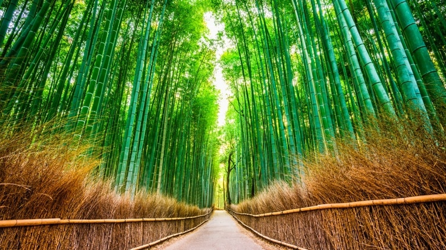
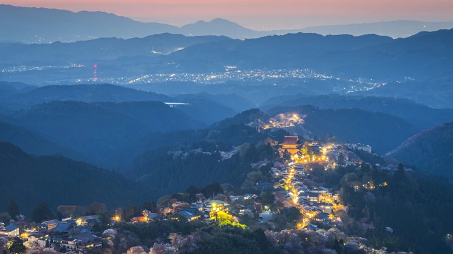
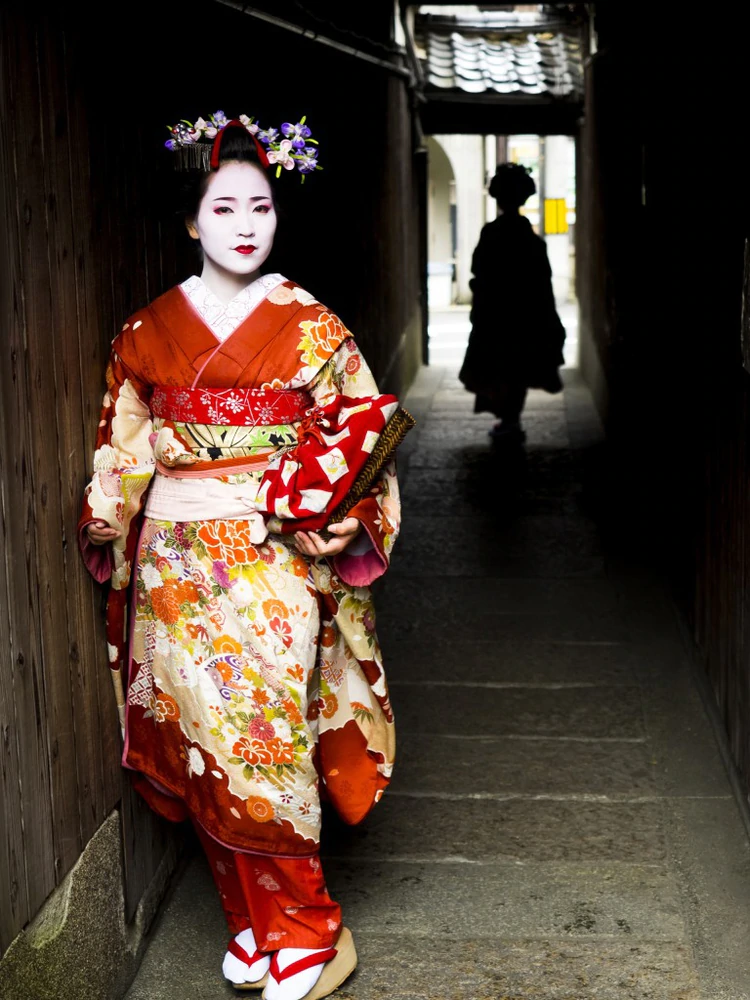
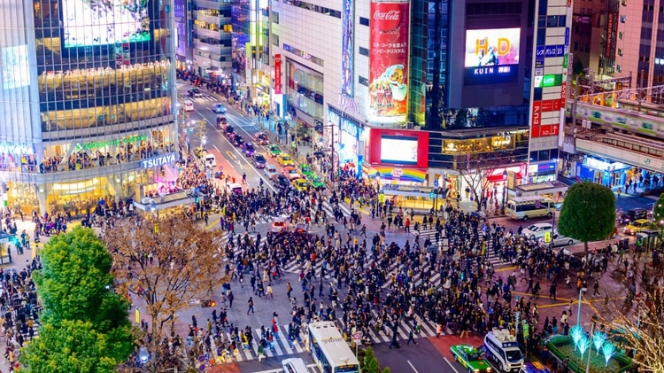
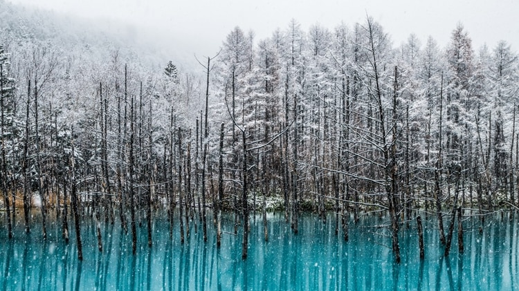
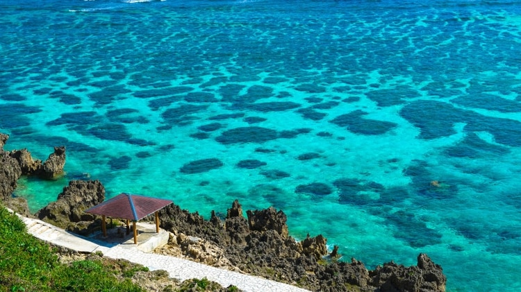

LUGARES FANTÁSTICOS DE JAPON
Bosque de bambú de Arashiyama, Kioto
Tal como su nombre lo indica, el bosque de bambú de Arashiyama es un hermoso espacio natural rodeado de esta planta gramínea en forma de caña.
El ecosistema, de gran atractivo turístico anual, se destaca por las sombras de clorofila y el susurro que produce el balanceo suave de los troncos de bambú.
Se encuentra en la ciudad de Kamakura, al noroeste de Kioto.

Monte Yoshino, Nara
El monte Yoshino se ubica en el homónimo pueblo en Nara, Japón. En el año 2004 fue nombrado Patrimonio de la Humanidad de la Unesco y es uno de los destinos
religiosos y de peregrinación más famosos y concurridos de Japón por sitios como el santuario Yoshino Mikumar y el Kinpusen-ji. Además, sus cerezos en flor lo convierte en una postal encantadora.

Distrito Geisha de Gion, Kioto
A Gion se lo conoce como el barrio de las geishas
y es uno de los lugares más concurridos de Japón. Compuesto por Gion Higashi y Gion Kobu,
posee una gran cantidad de casas de té atendidas por geishas y maikos. Caminar por sus callecitas y ver a las mujeres en sus vestimentas tradicionales es uno de los atractivos principales de la zona.

Shibuya Crossing, Tokio
Es impensable hoy en día visitar Tokio y no recorrer el Shibuya Crossing, la famosa intersección fuera de la Shibuya Station. Todas las luces de los semáforos se ponen rojas a la vez para permitirle
el paso a los miles de peatones que la atraviesan a diario: jóvenes estudiantes, parejas, grupos de amigos, compradores y gente yendo y volviendo de trabajar. Es un caos organizado y el cruce más transitado del mundo.

Laguna Azul, Hokkaido
La Laguna Azul de Biei (Hokkaido) es un lugar realmente sorprendente. Sus tonalidades cambian todos los días de acuerdo al sol y a la estación del año. Fue creada de forma artificial en caso de que entrara en erupción
el volcán Tokachidake. Además, los árboles que sobresalen de sus aguas agrandan el majestuoso efecto.

Miyakojima, Okinawa
La isla Miyakojima se encuentra en la Prefectura de Okinawa en Japón, y es una de las más maravillosas del planeta tierra. Este destino es ideal para realizar actividades acuáticas como el buceo y el snorkeling.
Es especialmente conocido por su increíble belleza natural, que la ubican en la cima de los destinos más hermosos de todo el Japón.
